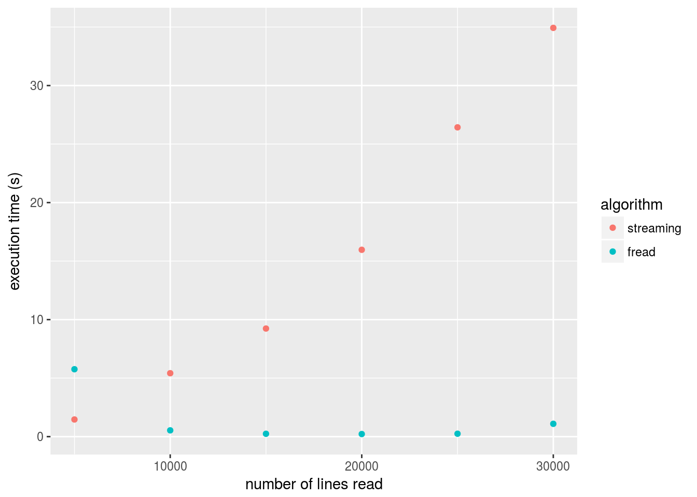

R is known to have difficulties handling large data files. Here we will explore some tips that make working with such files in R less painfull.
data.table package and read the file with its fread function.sqldf if you have to stick to csv files.dplyr.csv file to a sqlite database in order to queryWhile you can directly test this tutorial on your own large data files, we will use bird tracking data from the LifeWatch bird tracking network for the examples. We have made two versions of some tracking data available for download: a .csv file (text data) and a .db file (sqlite data). Both contain processed log files; for more information on the processing, see the BirdTrackingEtl package.
csv.name <- "2016-04-20-processed-logs-big-file-example.csv"
db.name <- "2016-04-20-processed-logs-big-file-example.db"The evaluation of the next code chunk is ignored by default as the downloading and unzipping of the files results in more than 3 GB of data. If you do want to download the files yourself and test the other chunks, run the code and download the csv and sqlite examples. Make sure you have the R.utils package available (for unzipping the downloaded files). If not, use the command install.packages("R.utils") in your R console to download the package.
library("R.utils")
# download the CSV file example
csv.url <- paste("https://s3-eu-west-1.amazonaws.com/lw-birdtracking-data/",
csv.name, ".gz", sep = "")
if(!file.exists(paste("./data-handling-large-files-R", csv.name, sep = "/"))){
download.file(csv.url,
destfile = paste(paste("./data-handling-large-files-R",
csv.name, sep = "/"), ".gz", sep = ""))
gunzip(paste(paste("./data-handling-large-files-R",
csv.name, sep = "/"), ".gz", sep = ""))
}
# download the sqlite database example
db.url <- paste("https://s3-eu-west-1.amazonaws.com/lw-birdtracking-data/",
db.name, ".gz", sep = "")
if(!file.exists(paste("./data-handling-large-files-R", db.name, sep = "/"))){
download.file(db.url, destfile = paste(paste("./data-handling-large-files-R",
db.name, sep = "/"), ".gz", sep = ""))
gunzip(paste(paste("./data-handling-large-files-R", db.name, sep = "/"), ".gz", sep = ""))
}fread or readr instead of read.library("data.table")
library("readr")If you really need to read an entire csv in memory, by default, R users use the read.table method or variations thereof (such as read.csv). However, fread from the data.table package is a lot faster. Furthermore, the readr package also provides more optimized reading functions (read_csv, read_delim,…). Let’s measure the time to read in the data using these three different methods.
read.table.timing <- system.time(read.table(csv.name, header = TRUE, sep = ","))
readr.timing <- system.time(read_delim(csv.name, ",", col_names = TRUE))
data.table.timing <- system.time(allData <- fread(csv.name, showProgress = FALSE))
data <- data.frame(method = c('read.table', 'readr', 'fread'),
timing = c(read.table.timing[3], readr.timing[3], data.table.timing[3]))
data## method timing
## 1 read.table 323.827
## 2 readr 33.824
## 3 fread 20.501fread and read_delim are indeed much faster then the default read.table. However, the result of fread is a data.table and the result of read_delim is a tibble. Both are not a data.frame. The data.table package describes the data.table object as a more performant replacement for the data.frame. This means that selecting, filtering and aggregating data is much faster on a data.table compared to the standard data.frame but it requires you to use a slightly different syntax. A tibble is very similar to a data.frame, but provides more convenience when printing or subsetting the data table.
You can find the data.table package on CRAN. A good place to learn this package are the package vignettes. The introduction to data.table should be enough to get started. You can also find the The readr package is also on CRAN. It belongs to a suite of R packages aiming to improve data manipulation in R, called tidyverse. More examples and explanation about readr is provided on the readr website.
If you are not able to read in the data file, because it does not fit in memory (or because R becomes too slow when you load the entire dataset), you will need to limit the amount of data that will actually be stored in memory. There are a couple of options which we will investigate:
sqldf.fread)Limiting the number of lines you read is easy. Just use the nrows and/or skip option (available to both read.table and fread). skip can be used to skip a number of rows, but you can also pass a string to this parameter causing fread to only start reading lines from the first line matching that string. Let’s say we only want to start reading lines after we find a line matching the pattern 801,2014-06-29. We can do that like this:
sprintf("Number of lines in full data set: %s", nrow(allData))## [1] "Number of lines in full data set: 3761058"subSet <- fread(csv.name, skip = "2015-06-12 15:14:39", showProgress = FALSE)
sprintf("Number of lines in data set with skipped lines: %s", nrow(subSet))## [1] "Number of lines in data set with skipped lines: 9998"Skipping rows this way is obviously not giving you the entire dataset, so this strategy is only useful for doing exploratory analysis on a subset of your data. Note that also read_delim provides a n_max argument to limit the number of lines to read. If you want to explore the whole dataset, limiting the number of columns you read can be a more useful strategy.
fread)If you only need 4 columns of the 21 columns present in the file, you can tell fread to only select those 4. This can have a major impact on the memory footprint of your data. The option you need for this is: select. With this, you can specify a number of columns to keep. The opposite - specifying the columns you want to drop - can be accomplished with the drop option.
fourColumns = fread(csv.name, select = c("device_info_serial", "date_time",
"latitude", "longitude"),
showProgress = FALSE)
sprintf("Size of total data in memory: %s MB", utils::object.size(allData)/1000000)## [1] "Size of total data in memory: 1434.074264 MB"sprintf("Size of only four columns in memory: %s MB", utils::object.size(fourColumns)/1000000)## [1] "Size of only four columns in memory: 365.90692 MB"The difference might not be as large as you would expect. R objects claim more memory then needed to store the data alone, as they keep pointers, and other object attributes. But still, the difference could save you.
sqldfThe sqldf package allows you to run SQL-like queries on a file, resulting in only a selection of the file being read. It allows you to limit both the number of lines and the number of rows at the same time. In the background, this actually creates a sqlite database on the fly to execute the query. Consider using the package when starting from a csv file, but the actual strategy boils down to making a sqlite database file of your data. See this section below to learn how to interact with those and create a SQlite database from a CSV-file.
Short: streaming a file in R is a bad idea. If you are interested why, read the rest of this section.
Streaming a file means reading it line by line and only keeping the lines you need or do stuff with the lines while you read through the file. It turns out that R is really not very efficient in streaming files. The main reason is the memory allocation process that has difficulties with a constantly growing object (which can be a dataframe containing only the selected lines).
In the next code block, we will read parts of our data file once using the freadfunction, and once line by line. You’ll see the performance issue with the streaming solution.
library(ggplot2)
allowedDevices = c(753, 801, 852)
minDate = strptime('1/3/2014',format = '%d/%m/%Y')
maxDate = strptime('1/10/2014',format = '%d/%m/%Y')
streamFile <- function(limit) {
con <- file(csv.name, open = "r")
selectedRecords <- list()
i <- 0
file.streaming.timing <- system.time(
while (i < limit) {
oneLine <- readLines(con, n = 1, warn = FALSE)
vec = (strsplit(oneLine, ","))
selectedRecords <- c(selectedRecords, vec)
i <- i + 1
}
)
close(con)
return(file.streaming.timing[[3]])
}
freadFile <- function(limit) {
file.fread.timing = system.time(
d <- fread(csv.name, showProgress = FALSE, nrows = limit)
)
return(file.fread.timing[[3]])
}
maxLines <- c(5000, 10000, 15000, 20000, 25000, 30000)
streamingTimes <- sapply(maxLines, streamFile)
freadTimes <- sapply(maxLines, freadFile)
data <- data.frame(n = maxLines, streaming = streamingTimes,
fread = freadTimes)
pdata <- melt(data, id = c("n"))
colnames(pdata) <- c("n", "algorithm", "execTime")
qplot(n, execTime, data = pdata, color = algorithm,
xlab = "number of lines read", ylab = "execution time (s)")
SQLite databases are single file databases meaning you can simply download them, store them in a folder or share them with colleages. Similar to a csv. They are however more powerful than csv’s because of two important features:
sqldf package or database environments you are familiar with. That way, you can reduce the amount of data that’s stored in memory by filtering out rows or columns.We have downloaded a second file 2016-04-20-processed-logs-big-file-example.db that contains the same data as the 2016-04-20-processed-logs-big-file-example.csv file, but as a sqlite database. Furthermore, the database file contains indexes which will dramatically drop the time needed to perform search queries. If you do not have a SQLite database containing your data, you can first convert your csv into a SQlite as described further in this tutorial.
Let’s first connect to the database and list the available tables.
library(RSQLite)
db <- dbConnect(SQLite(), dbname = db.name)
# show the tables in this database
dbListTables(db)## [1] "SpatialIndex"
## [2] "geom_cols_ref_sys"
## [3] "geometry_columns"
## [4] "geometry_columns_auth"
## [5] "geometry_columns_field_infos"
## [6] "geometry_columns_statistics"
## [7] "geometry_columns_time"
## [8] "processed_logs"
## [9] "spatial_ref_sys"
## [10] "spatialite_history"
## [11] "sql_statements_log"
## [12] "sqlite_sequence"
## [13] "vector_layers"
## [14] "vector_layers_auth"
## [15] "vector_layers_field_infos"
## [16] "vector_layers_statistics"
## [17] "views_geometry_columns"
## [18] "views_geometry_columns_auth"
## [19] "views_geometry_columns_field_infos"
## [20] "views_geometry_columns_statistics"
## [21] "virts_geometry_columns"
## [22] "virts_geometry_columns_auth"
## [23] "virts_geometry_columns_field_infos"
## [24] "virts_geometry_columns_statistics"Let’s try to select rows where the device id matches a given value (e.g. 860), and the date time is between two given timestamps. For our analysis, we only need date_time, latitude, longitude and altitude so we will only select those.
sqlTiming <- system.time(data <- dbGetQuery(conn = db,
"SELECT date_time, latitude, longitude, altitude
FROM processed_logs
WHERE device_info_serial = 860
AND date_time < '2014-07-01'
AND date_time > '2014-03-01'"
))
print(sqlTiming[3])## elapsed
## 7.182This provides a convenient and fast way to request subsets of data from our large data file. We could do the same analysis for each of the serial numbers, each time only loading that subset of the data. As an example, consider the calculation of the average altitude over the specified period for each of the bird serial identifiers in the list serial_id_list. By using a for loop, the calculation is done for each of the birds separately and the amount of data loaded into memory at the same time is lower:
serial_id_list <- c(853, 860, 783)
print("Average altitude between 2014-03-01 and 2014-07-01:")## [1] "Average altitude between 2014-03-01 and 2014-07-01:"for (serialid in serial_id_list) {
data <- dbGetQuery(conn = db,
sprintf("SELECT date_time, latitude, longitude, altitude
FROM processed_logs
WHERE device_info_serial = %d
AND date_time < '2014-07-01'
AND date_time > '2014-03-01'", serialid))
print(sprintf("serialID %d: %f", serialid, mean(data$altitude)))
}## [1] "serialID 853: NA"
## [1] "serialID 860: 23.550518"
## [1] "serialID 783: 14.900030"Remark that we use the sprintf function to dynamically replace the serial id in the sqlite query we will execute. For each loop, the %d is replaced by the value of the serial id of the respective loop. Read the manual of the sprintf function for more information and options.
dplyrIf you’re not comfortable with writing queries in SQL, R has a great alternative: dplyr. dplyr can connect to a SQLite database and you can perform the same operations on it that you would do on a dataframe. However, dplyr will translate your commands to SQL, allowing you to take advantage of the indexes in the SQLite database.
library(dplyr)
my_db <- src_sqlite(db.name, create = FALSE)
bird_tracking <- tbl(my_db, "processed_logs")
results <- bird_tracking %>%
filter(device_info_serial == 860) %>%
select(date_time, latitude, longitude, altitude) %>%
filter(date_time < "2014-07-01") %>%
filter(date_time > "2014-03-01")
head(results)## Source: query [?? x 4]
## Database: sqlite 3.11.1 [2016-04-20-processed-logs-big-file-example.db]
##
## date_time latitude longitude altitude
## <chr> <dbl> <dbl> <dbl>
## 1 2014-03-10 12:43:37 44.02479 -7.593672 626
## 2 2014-03-10 12:58:32 44.05553 -7.672856 405
## 3 2014-03-10 13:13:52 44.05931 -7.691700 326
## 4 2014-03-10 13:28:57 44.06181 -7.708990 250
## 5 2014-03-10 13:43:54 44.06501 -7.724725 174
## 6 2014-03-10 13:59:06 44.06468 -7.726737 23Dplyr provides the ability to perform queries as above without the need to know SQL. If you want to learn more about how to use dplyr with a SQLite database, head over to this vignette.
In the case you have a CSV file available and you would like to query the data using SQL queries or with dplyr as shown in the previous sections, you can decide to convert the data to a SQlite database. The conversion will require some time, but once available, it provides the opportunity to query the data using SQL queries or with dplyr as shown in the previous sections. Moreover, you can easily add additional tables with related information to combine the data with.
If you already loaded the CSV file into memory, the creation of a SQLITE database is very straighforward and can be achieved in two steps:
db <- dbConnect(SQLite(), dbname = "example.sqlite")
dbWriteTable(db, "birdtracks", allData)## [1] TRUEdbDisconnect(db)## [1] TRUEThe first command creates a new database when the file example.sqlite does not exist already. The command dbWriteTable writes the table in the database. Hence, we can rerun the query from the previous section, but now on the newly created SQlite database, with the single created table birdtracks:
my_db <- src_sqlite("example.sqlite", create = FALSE)
bird_tracking <- tbl(my_db, "birdtracks")
results <- bird_tracking %>%
filter(device_info_serial == 860) %>%
select(date_time, latitude, longitude, altitude) %>%
filter(date_time < "2014-07-01") %>%
filter(date_time > "2014-03-01")
head(results)## Source: query [?? x 4]
## Database: sqlite 3.11.1 [example.sqlite]
##
## date_time latitude longitude altitude
## <chr> <dbl> <dbl> <int>
## 1 2014-03-10 12:43:37 44.02479 -7.593672 626
## 2 2014-03-10 12:58:32 44.05553 -7.672856 405
## 3 2014-03-10 13:13:52 44.05931 -7.691700 326
## 4 2014-03-10 13:28:57 44.06181 -7.708990 250
## 5 2014-03-10 13:43:54 44.06501 -7.724725 174
## 6 2014-03-10 13:59:06 44.06468 -7.726737 23However, when working with really large CSV files, you do not want to load the entire file into memory first (this is the whole point of this tutorial). An alternative strategy is to load the data from the CSV file in chunks (small sections) and write them step by step to the SQlite database.
This can be implemented by reading the CSV file in small sections (let’s say 50000 lines each time) and move all sections to a given table in a sqlite database. As this is a recurrent task, we will provide the transformation in a custom written function, called csv_to_sqlite. The documentation of the individual input parameters of the function are explained in the documentation section just above the functionn itself. As SQlite does not natively support date and datetime representations, the function converts those columns to an appropriate string representation before copying the dates to sqlite. To check for the date handling, the lubridate package is used.
library(lubridate)
#' Save a single CSV-table into a single table sqlite database
#'
#' @param csv_file name of the CSV file to convert
#' @param sqlite_file name of the newly created sqlite file
#' @param table_name name of the table to store the data table in the sqlite
#' dbase
#' @param pre_process_size the number of lines to check the data types of the
#' individual columns (default 1000)
#' @param chunk_size the number of lines to read for each chunk (default 50000)
#'
csv_to_sqlite <- function(csv_file, sqlite_file, table_name,
pre_process_size = 1000, chunk_size = 50000) {
con <- dbConnect(RSQLite::SQLite(), dbname = sqlite_file)
# read an extract of the data to extract the colnames and types
# to figure out the date ande datetime columns
df <- read_delim(csv_file, ",", n_max = pre_process_size)
date_cols <- df %>%
select_if(lubridate::is.Date) %>%
colnames()
datetime_cols <- df %>%
select_if(lubridate::is.POSIXt) %>%
colnames()
# write this first batch of lines to SQLITE table, converting dates to string representation
df[ , date_cols] <- as.character.Date(df[ , date_cols])
df[ , datetime_cols] <- as.character.POSIXt(df[ , datetime_cols])
dbWriteTable(con, table_name, as.data.frame(df),
overwrite = TRUE)
# subfunction that appends new sections to the table
append_to_sqlite <- function(x, pos) {
x <- as.data.frame(x)
x[ , date_cols] <- as.character.Date(x[ , date_cols])
x[ , datetime_cols] <- as.character.POSIXt(x[ , datetime_cols])
dbWriteTable(con, table_name, x, append = TRUE)
}
# readr chunk functionality
read_delim_chunked(csv_file, append_to_sqlite, delim = ",",
skip = pre_process_size, col_names = colnames(df),
col_types = spec(df), chunk_size = chunk_size,
progress = FALSE)
dbDisconnect(con)
}As an example, let’s convert the processed bird logs csv file to a sqlite database, called example.sqlite as a table birdtracks. Using the default values for the preprocessing number of lines and the chunk size, the conversion is as follows:
sqlite_file <- "example2.sqlite"
table_name <- "birdtracks"
csv_to_sqlite(paste("./data-handling-large-files-R", csv.name, sep = "/"),
sqlite_file, table_name, pre_process_size = 1000,
chunk_size = 50000)## [1] TRUEHence, this approach will work for large files as well and is an ideal first step when doing this kind of analysis. Once performed, the SQlite database is available to query, similar to the previous examples:
my_db <- src_sqlite("example2.sqlite", create = FALSE)
bird_tracking <- tbl(my_db, "birdtracks")
results <- bird_tracking %>%
filter(device_info_serial == 860) %>%
select(date_time, latitude, longitude, altitude) %>%
filter(date_time < "2014-07-01") %>%
filter(date_time > "2014-03-01")
head(results)## Source: query [?? x 4]
## Database: sqlite 3.11.1 [example2.sqlite]
##
## date_time latitude longitude altitude
## <chr> <dbl> <dbl> <int>
## 1 2014-03-10 12:43:37 44.02479 -7.593672 626
## 2 2014-03-10 12:58:32 44.05553 -7.672856 405
## 3 2014-03-10 13:13:52 44.05931 -7.691700 326
## 4 2014-03-10 13:28:57 44.06181 -7.708990 250
## 5 2014-03-10 13:43:54 44.06501 -7.724725 174
## 6 2014-03-10 13:59:06 44.06468 -7.726737 23Remark that the dates are properly handled, by making sure the date representation inside SQlite is the converted string version.